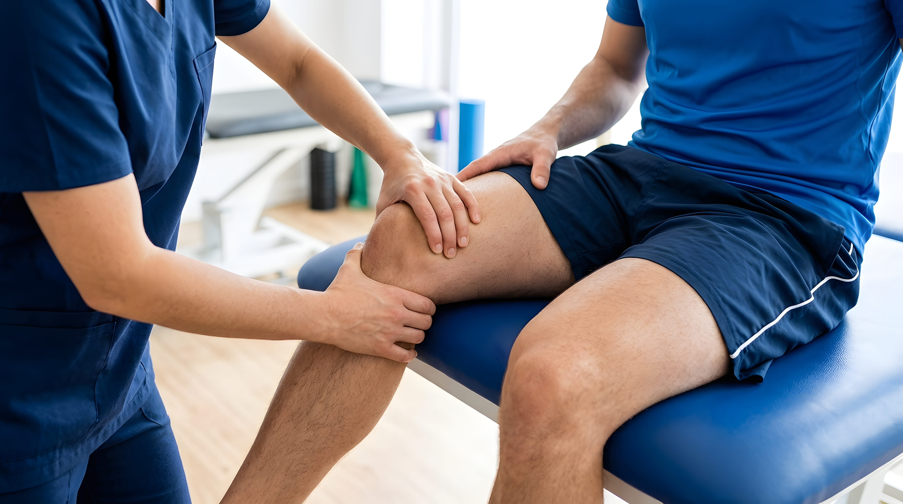
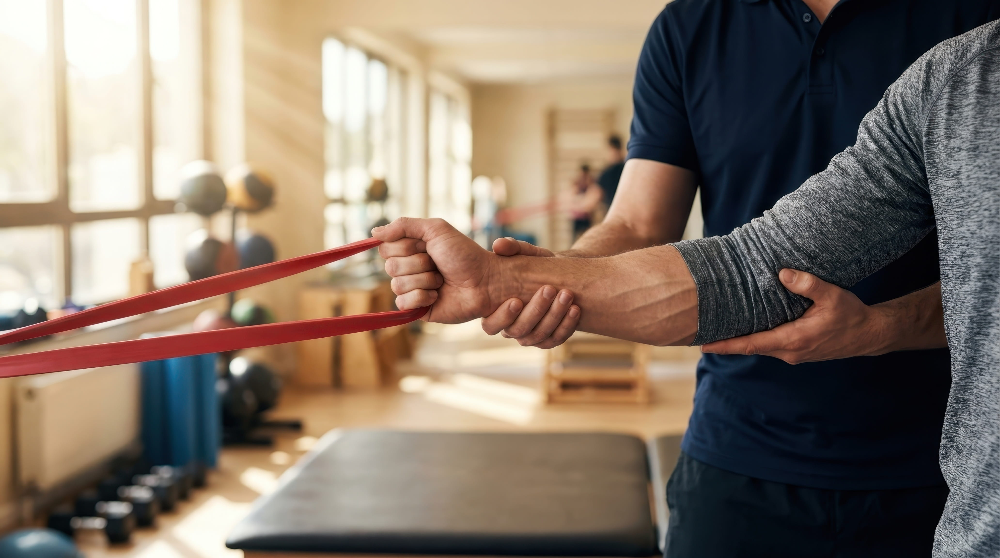
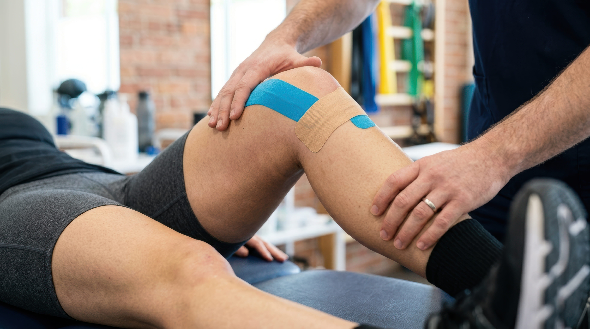

Root-Cause Rehabilitation in the City of London That Goes Beyond Symptom Relief
If pain keeps returning, injuries never seem to fully resolve or rehabilitation has left you feeling stuck, it may be time for a different approach.
At Strong & Flexible, my Root-Cause Rehabilitation service in the City of London is designed to help you understand and address the underlying movement patterns contributing to recurring pain, reduced mobility or ongoing physical limitations. Rather than focusing solely on symptoms, I combine Anatomy in Motion (AiM) biomechanics, precise tactile cueing, and progressive eccentric loading to help you rebuild your neuromuscular foundation.
Whether you're recovering from an injury, returning to exercise or looking to overcome persistent movement challenges, every rehabilitation programme is tailored to your individual goals and how your body moves.
Start your rehabilitation journey today and take the first step towards lasting movement confidence.
Book nowWhy Choose Strong & Flexible?
- Personalised one-to-one rehabilitation tailored to your individual needs
- Focused on addressing the underlying causes of recurring pain and injury
- Combines movement coaching, rehabilitation and strength development
- Practical guidance to help you build confidence beyond each session
- Convenient City of London location close to Liverpool Street Station
- A long-term approach centred on improving movement rather than simply managing symptoms
Ready to move beyond short-term fixes?
Contact Strong & Flexible to book your consultation.
What Is Root-Cause Rehabilitation?
Root-Cause Rehabilitation is designed for people who want more than temporary relief. Instead of concentrating solely on the area that feels painful, I look at how your body moves as a whole to understand what may be contributing to recurring problems.
It's common for pain to settle temporarily, only to return when you train. This happens because your nervous system has hardwired a compensatory movement pattern, often due to a past injury, hypermobility, or joint laxity. Root-Cause Rehabilitation is about identifying the specific joint that isn't pulling its weight, like a foot that won't supinate, and using targeted drills to force the correct neuromuscular pathway.
My rehabilitation approach focuses on helping your body develop more efficient and sustainable movement strategies. Sessions combine movement coaching, tactile cueing, progressive loading and strength-based rehabilitation to help improve the way your body moves, adapts and responds to physical demands.
Rather than following a standard rehabilitation protocol, every programme is adapted to your goals, your movement patterns and your progress.
For clients who require a more detailed understanding of how they move, a dedicated Movement Assessment can help identify the factors influencing recurring pain or movement limitations before rehabilitation begins.
Explore All Services
Who Is Root-Cause Rehabilitation For?
Root-Cause Rehabilitation is suitable for people who feel they've reached a plateau with traditional rehabilitation or are frustrated by pain and injuries that keep coming back.
You may benefit if you:
- Experience recurring injuries that never seem to fully resolve
- Have ongoing aches or discomfort that return after activity
- Want to return to sport or exercise with greater confidence
- Feel restricted by stiffness or reduced mobility
- Have completed treatment elsewhere but still don't feel like yourself
- Want to build strength without aggravating old injuries
- Are looking for a long-term approach rather than a temporary fix

Whether you're an office worker, recreational athlete or someone who simply wants to move more comfortably, rehabilitation is tailored to your goals, your lifestyle and how your body moves.
My Approach to Rehabilitation
No two people move in exactly the same way, which is why every rehabilitation programme is built around the individual rather than a standard protocol.
Every session builds on the one before. Together we'll work on improving how your body moves using movement coaching, hands-on guidance and progressive strength work. The aim isn't simply to complete a set of exercises, but to help you build movement confidence that carries over into everyday life.

Depending on your goals, your rehabilitation may include:
- Movement coaching to improve how your body moves
- Hands-on guidance to support movement awareness
- Progressive loading to rebuild strength and resilience
- Practical exercises tailored to your current ability and long-term goals
- Ongoing support and education to help you maintain your progress
- Using neurological feedback wedges to create physical constraints that guide your body into optimal joint alignment, bypassing the need for overthinking or complex verbal instructions
- Heavy, overcoming isometrics at the end-ranges of your active mobility to build neurological trust in your connective tissue
My aim isn't just to help you recover from your current issue. It's to give you the confidence, understanding and movement strategies needed to reduce the likelihood of the same problem returning.
Find Out More About Strong And FlexibleSupporting Clients Across the City of London
Strong & Flexible is based in the City of London, making it convenient for professionals, active individuals and anyone looking for personalised rehabilitation close to Liverpool Street Station.
Clients regularly travel from Liverpool Street, Moorgate, Bank, Aldgate, Monument, Shoreditch and the surrounding areas for one-to-one rehabilitation designed around their individual needs.
Whether you're recovering from an injury, returning to training or looking to overcome recurring movement challenges, every session is designed to help you move with greater confidence and build long-term physical resilience.
Frequently Asked Questions
Is Root-Cause Rehabilitation suitable for long-term injuries?
Yes. Many clients seek Root-Cause Rehabilitation after experiencing recurring injuries or ongoing discomfort that hasn't fully improved. The focus is on understanding how your body moves and helping you develop more efficient movement strategies for long-term progress.
Do I need to be recovering from a recent injury?
No. Rehabilitation isn't only for recent injuries. It can also help if you've been managing recurring pain, movement limitations or long-standing physical challenges that continue to affect your daily life or training.
Will I be given exercises to do at home?
Where appropriate, you'll receive practical exercises and movement guidance that support the work completed during your sessions. These recommendations are tailored to your goals and current ability, helping you continue making progress between appointments.
How is Root-Cause Rehabilitation different from a standard rehabilitation programme?
Rather than following a fixed protocol, every session is tailored to how you move, your goals and your progress. By combining movement coaching, tactile cueing and progressive strength work, the focus is on addressing the underlying factors contributing to recurring issues rather than simply managing symptoms.
Book Root-Cause Rehabilitation in the City of London
If recurring pain, persistent injuries or movement limitations are holding you back, Root-Cause Rehabilitation can help you move beyond short-term symptom management and build lasting confidence in the way your body moves.
Every programme is tailored to your individual needs, combining movement coaching, progressive rehabilitation and strength development to help you address the underlying causes of recurring problems. Whether your goal is returning to sport, improving everyday movement or building long-term resilience, you'll receive personalised support every step of the way.
Ready to take the next step? Contact Strong & Flexible today to book your Root-Cause Rehabilitation consultation in the City of London.
Call: 07841 405 746
Email: irek@strongandflexible.co.uk
Book Your Assessment